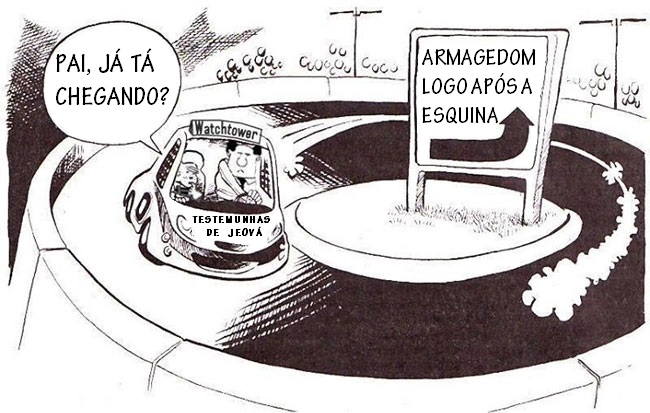

Sim, o mundo mudou realmente em 1914. – Despertai! g81 8/11 p. 8
As Testemunhas de Jeová acreditam que os últimos dias começaram em 1914, e prova disso seria um suposto aumento nas doenças, fome, guerras, terremotos e crimes. Esta seção mostra que estas condições não ficaram piores desde 1914, e na maior parte das vezes, melhoraram muito! Por esta razão, as Testemunhas de Jeová acham necessário apresentar informações imprecisas e enganosas para apoiar as suas afirmações.
Religiões apocalípticas, como as Testemunhas de Jeová, acreditam que os últimos dias são um curto período de tempo (geralmente o tempo atual). O fundador das Testemunhas de Jeová, Russell, ensinava que o “tempo do fim” começou em 1799, copiando esse entendimento do movimento adventista do século 19. Ele afirmou que sua geração, os anos 1800, tiveram as piores condições da história, e isso era prova de que os últimos dias terminariam em 1914.
*** A Sentinela de 15 de Julho de 1894, p. 224, em inglês, tradução minha ***
Nossos leitores têm escrito para saber se talvez não haja um erro na data de 1914. Eles não conseguem imaginar como as condições atuais poderão continuar por tanto tempo, sob tanta pressão.
Visto que todas as previsões Adventistas de Russell falharam, o segundo líder das Testemunhas de Jeová, Rutherford, precisou fazer ajustes. Ele mudou o início dos Últimos Dias para a sua própria geração. Rutherford mudou a explicação do século 19 para o século 20, e a partir de 1930, ele passou a dizer que os Últimos Dias começaram em 1914. (Veja a seção Datas Alteradas)
Atualmente, as Testemunhas de Jeová dizem que os séculos 20 e 21 viram um cumprimento único das profecias de guerras, terremotos, doenças e fome. Isso não é incomum: em todos os séculos, desde os tempos de Jesus, sempre houve seitas cristãs afirmando que o seu século era o pior tempo da história. Cerca de 300 anos atrás, Newton escreveu:
“Escrevo isto, não para afirmar quando será o tempo do fim, mas para colocar um fim nas suposições precipitadas de homens polêmicos que ficam constantemente prevendo o tempo do fim, e por fazerem isso, põem dúvida nas profecias sagradas toda vez que suas previsões falham.”1
Para dar apoio à sua teoria de que o reino celestial invisível de Jesus começou em 1914, as Testemunhas de Jeová referem-se a 1914 da seguinte forma:
*** w81 15/4 p. 14 par. 11 ***
…aquele ano foi o de virada para a humanidade, porque foi então que o mundo entrou num período de dificuldades como nunca teve antes em tal escala global.
Afirmações assim não representam os fatos, e ao final desta seção, ficará claro que a evidência histórica prova que nunca houve um período de tempo mais seguro e desejável para se viver. Por meio deste resumo,2 mostraremos que esses “sinais” podem ser aplicados para qualquer século desde o tempo de Jesus.
Todo século teve guerras, doenças, fome e terremotos. Os anos 1200 foram assolados por tudo isso muito mais que os anos 1900. No entanto, o pior período de tempo desde o tempo de Jesus foi, provavelmente, o século 14, com contínuas catástrofes bem maiores que as do século 20. Um dos fatores que mais contribuiu foi a “grande fome” da Europa em 1315 a 1317, causada por condições tão ruins que os pais comiam seus filhos. Isso levou a um grande aumento na criminalidade, conforme registrado pelo historiador George Lucas. Na obra Europa Medieval: Crise e Renovação (Medieval Europe: Crisis and Renewal), em inglês, tradução minha, T.F. Ruiz mostra que estupros e assassinatos eram bem mais comuns no século 14 do que no século 20. Houve guerras espalhadas pelo século, com os Mongóis matando mais de 35 milhões de Chineses no início dos anos 1300 e, em 1337, a guerra mais longa da história começou (a Guerra dos Cem Anos entre a França e a Inglaterra). Como ocorreu em todos os séculos, constantes terremotos causaram muita destruição e morte. A população, enfraquecida, sucumbiu à morte Negra, uma peste bubônica que começou em 1347 e matou um terço da Europa, causando um total de mais de 70 milhões de mortes. O resultado foi que, dentro de 1 século, estima-se que a população global reduziu de 450 milhões para 350 milhões.
No século 16, comentários de escritores religiosos são muito parecidos com os comentários das Testemunhas de Jeová hoje:
“Seis mil anos passaram-se desde a Criação, e o Mundo não deve durar tanto tempo mais. Deus deveria, portanto, punir a humanidade com doenças, fome e morte nos últimos dias – e não está fazendo isso?” – Bispo Peter Palladius, 1555 (em inglês, tradução minha)
“O mundo está tão mau que não pode piorar mais. Uma criança de 7 anos conhece mais impiedade do que os idosos conheceram antes. Fidelidade e amor não existem mais. Os sinais dos céus não podem ser mal interpretados. Há sangue, dor, sofrimento, diabos e demônios por toda parte.” – Bispo Olaus Petri, c. 1550 (em inglês, tradução minha)
“O fim está próximo.” – Historiador e teólogo John Carion, 1532 (em inglês, tradução minha)
“Uma grande batalha aconteceu no céu. O anticristo será expulso em 1672. Haverá, então, um curto período quando a Palavra de Cristo será pregada em toda a terra habitada em toda sua pureza, limpeza e clareza, antes de Cristo vir pela segunda vez.” – Teólogo Andrew Osiander, c. 1555 (em inglês, tradução minha)
Este é o melhor período da História para se estar vivo.
Além disso, a vida melhorou desde a revolução industrial. Avanços tremendos na maioria dos aspectos da vida resultaram no aumento da expectativa de vida ao nascer, passando de 28,5 anos para 68 anos, entre 1800 e 2007 (Aumento da Expectativa de Vida, de Riley). Isso deve-se a uma proporção mais baixa de mortes causadas por guerras, a melhoras impressionantes na medicina, a mais condenações por crimes sérios, melhor distribuição de comida durante fomes, e melhor preparo para terremotos.
Doenças
A Sentinela fez a afirmação sensacionalista de que a gripe espanhola foi a mais mortal de todas:
*** A Sentinela – w82 15/10 p. 9 ***
Logo após a Primeira Guerra Mundial, mais pessoas morreram da gripe espanhola do que de qualquer outra epidemia da história da humanidade. Ceifou cerca de 21 milhões de vidas!
A praga espanhola não foi a epidemia mais mortal da história. Essa falsa afirmação é desmentida não só pela história, mas também pelas próprias edições anteriores da revista A Sentinela.
*** A Sentinela – w77 15/9 p. 551 ***
O artigo observou que a praga de Justiniano, do sexto século, “supostamente arrebatou 100 milhões de vidas — mas durou 50 anos”. Diz-se que a peste bubônica, do século 14, ceifou 62 milhões de vidas em todo o mundo, mas durou três anos.
Doenças têm flagelado a humanidade desde Jesus. Por exemplo:
- Entre 310 e 312 EC, uma peste matou até 99% das pessoas nas províncias do noroeste da China.
- Uma peste foi atribuída ao declínio do Império Romano.
- Entre 1346 e 1720 a Europa sofreu uma peste, em média, a cada 6 anos, muitas vezes afetando mais de 30% da população.
- A peste negra (bubônica) matou 75 milhões de pessoas na Europa entre 1347-1351 (abc.net.au 29 Jan 2008), e até 200 milhões ao longo do século 14 (bbc.net.uk 03 de outubro de 2001).
- Durante os anos 1800, cinco pandemias de cólera mataram mais de 40 milhões de pessoas, com algumas estimativas chegando ao grande número de 100 milhões de mortes.3
Depois de reinarem sem controle por uns 2000 anos, as pestes foram dramaticamente reduzidas no século 20. Um artigo intitulado “História das Doenças da Saúde Pública” na Enciclopédia Britânica de 2002 (em inglês) diz:
“Em termos de doenças, a Idade Média pode ser considerada como se iniciasse com a praga de 542 e terminasse com a Peste Negra (peste bubônica) de 1348. Doenças em proporções epidêmicas incluíram lepra, peste bubônica, varíola, tuberculose, sarna, erisipela, anthrax, tracoma, doença do suor, e dançomania. … Os desenvolvimentos da microbiologia e da imunologia tiveram imensas consequências para a saúde da comunidade. … Evidências da eficácia desta nova fase da saúde pública podem ser vistas nas estatísticas de imunização contra a difteria – na cidade de New York, a taxa de mortalidade devida à difteria caiu de 785 por 100.000 em 1894, para 1,1 por 100.000 em 1940.
A Sentinela continua com uma linha adicional de raciocínios errados, tentando transformar problemas de coração e câncer em uma parte do sinal de Jesus:
*** w82 15/10 p. 9 Pode o fim do mundo estar próximo? ***
Contudo, a pestilência e a doença continuam a grassar. Milhões morrem cada ano em virtude de afecções cardíacas e de câncer.
Em Lucas 21:11, o médico Lucas usou a palavra grega loimoi ao dar o sinal. Loimoi se refere a uma doença infecciosa, diferente das palavras nosos (doença) ou Malakia (enfermidade). Portanto, Jesus não estava se referindo a um aumento de doenças cardíacas e câncer, que não são infecciosas.
Os avanços médicos contra pestes e doenças resultaram em aumentos significativos na expectativa de vida ao longo dos últimos 100 anos. Um documento da Universidade Nacional Australiana, afirma:
“A duração média da vida humana praticamente dobrou ao longo dos últimos 200 anos. A maior parte desse aumento ocorreu nos últimos 100 anos. Na Austrália, a expectativa de vida ao nascer era de 57 anos em 1901-1910 e aumentou para 80 anos em 2000. Durante a primeira parte do século, os maiores aumentos foram devido a reduções na mortalidade de jovens por doenças infecciosas e parasitárias, enquanto que, na parte final do século, a redução da mortalidade por doenças crônicas em idades mais avançadas foi o fator dominante.” Fonte: Beyond three score years and ten: Prospects for longevity in Australia, Heather Booth & Leonie Tickle.
Fome
As Testemunhas de Jeová afirmaram (incorretamente), várias vezes, que as maiores fomes de todos os tempos ocorreram depois de 1914.
*** Venha o Teu Reino – kc cap. 13 p. 122 par. 11 ***
E na esteira da Primeira Guerra Mundial veio a maior fome de toda a história.
*** Do Paraíso Perdido ao Paraíso Restaurado (em inglês), página 181, tradução minha ***
Pouco depois da Primeira Guerra Mundia, a China enfrentou sua maior fome”
Tais comentários são totalmente falsos. Aparentemente, eles referem-se às seguintes fomes:
*** A Sentinela – w83 15/10 p. 5 ***
Só para mencionarmos alguns casos: Em 1921, a fome causou a morte a cerca de 5 milhões de pessoas na URSS. Em 1929, a fome causou calculadamente 3 milhões de mortes na China. Na década de 30, 5 milhões morreram de fome na URSS. Há apenas alguns anos, um prolongado período de estiagem nos países que fazem fronteira com o deserto do Saara resultou num incontável número de refugiados e em até 100.000 mortes.
De novo, as Testemunhas de Jeová distorceram a realidade para apoiar sua teoria de 1914. Mortes relacionadas a fome desde 1914 são insignificantes quando comparadas aos séculos anteriores. Nos 2000 anos que antecederam a Primeira Guerra Mundial, o mundo teve uma história terrível de fomes, e muitos milhares de fomes foram mencionados por pesquisadores como F. Curschmann, L. Delisle e A. Schultz. Para dar uma ideia de quão numerosas eram as fomes, e quão maiores eram seus efeitos, considere o seguinte:
| País | Período | Mortes |
| China | 1876 | 9 milhões |
| Índia |
1876-78 | 5 milhões |
| Pérsia |
1871-73 | 1,5 milhão |
| Índia |
1865-66 | 3 milhões |
| China | 1849 | 14 milhões |
| Irlanda |
1846 | 1 milhão |
| Índia |
1769-70 | + de 10 milhões |
| França |
1709 | 1 milhão |
O século 19 (anos 18xx) sozinho matou mais de 100 milhões de Chineses. Diversos relatos mostram que a China, Índia, Irlanda e Inglaterra recorreram ao canibalismo (mesmo de seus próprios filhos) para tentar sobreviver.
A fome diminuiu dramaticamente desde 1914, como pode ser visto na comparação dos números sobre os anos 18xx com os números apresentados em A Sentinela de 1983 sobre os anos 19xx. A Índia e a China praticamente acabaram com a fome nos últimos 50 anos. Durante os anos iniciais da década de 1980, obras de caridade conseguiram limitar as mortes causadas pela seca na África a 1 milhão. Desde então, a combinação de tecnologias avançadas de colheita com esforços globais de caridade praticamente acabaram com as mortes causadas por fome de milhões de pessoas.
O artigo Fome Global: Fome calamitosa erradicada nos últimos 50 anos (Global Hunger: Calamitous famine eradicated in last 50 years), da Associated Press, de 12 de Outubro de 2015, disponível em cnsnews.com (em inglês), mostra quão marcante foi a redução da fome (tradução minha):
“O estudo, parte do Indicador Global da Fome de 2015, diz que é uma das “conquistas não anunciadas” dos últimos 50 anos: a eliminação das fomes calamitosas que causam mais de 1 milhão de mortes, e a redução “quase ao ponto de extinguir” as grandes fomes, que causam mais de 100 mil mortes.”
” ‘As tendências são impressionantes’, disse o autor Alex de Waal, diretor executivo da Fundação da Paz Mundial na Universidade de Tufts. Até meados do século 20, milhões morriam de fome em todas as décadas – passou de 27 milhões em 1900 a 1909 e mais de 15 milhões nas décadas de 1920, 1940, 1950 e 1960 para o mínimo de 1,4 milhões na década de 1990. Até agora, neste século [21], o número de mortes é próximo de 600 mil.”
A década anterior a 1914 resultou em 27 milhões de mortes por fome. A década antes de 2014: menos de 0,5 milhão. Considerando o aumento da população de 1,75 bilhão em 1910, para 6,9 bilhões em 2010, o número de mortes causadas por fome reduziu a menos de 1,9% do que era antes de 1914, apesar das afirmações das Testemunhas de Jeová de que estamos no final dos últimos dias.
Guerras
Provavelmente, a “prova” mais usada de que Jesus começou a reinar em 1914 é a de que a Primeira Guerra Mundial começou naquele ano. As Testemunhas de Jeová tentaram apresentar a Primeira Guerra Mundial como um divisor de águas na história da humanidade. As afirmações incluem:
*** A Sentinela w84 1/11 p. 4 ***
A PRIMEIRA Guerra Mundial foi em muito o mais amplo e o mais destrutivo conflito humano ocorrido até então.
*** A Sentinela w84 15/1 p. 7 ***
Nenhuma geração anterior à de 1914 jamais passou por uma guerra mundial, e muito menos por duas.
*** Despertai g81 8/11 p. 8 ***
Os historiadores são amplamente da opinião de que a Primeira Guerra Mundial foi a primeira em escala global.
*** A Sentinela w81 15/4 p. 14 par. 11 ***
A Primeira Guerra Mundial era evidência disso, porque foi muitíssimo pior do que qualquer outra guerra que a precedeu, motivo pelo qual, naquele tempo, foi chamada de “Grande Guerra”. Foi a primeira guerra global ou mundial. Foi uma guerra total e afetou quase cada país da terra.
Todos esses comentários são falsos. A Primeira Guerra Mundial não foi a primeira “Mundial”, nem a mais destrutiva, nem foi uma guerra única. Algumas guerras anteriores também foram classificadas como mundiais, algumas envolvendo mais mortes e/ou mais países. As seguintes guerras foram todas classificadas como guerras mundiais:
- A Guerra da Sucessão Espanhola, de 1702 a 1713/14;
- A Guerra dos Sete Anos, de 1756 a 1763;
- A Guerra da Independência dos Estados Unidos, de 1775 a 1783;
- As Guerras Napoleônicas, de 1792 a 1815.
O autor Halvdan Koht, na obra Folkets Tidsalder (Stolkhome, 1982) página 7 (em dinamarquês), afirma que as Guerras Napoleônicas foram “uma guerra mundial de mais de 20 anos de duração, travada em todos os continentes”. Por outro lado, a Grande Guerra de 1914 (como era conhecida) limitou-se principalmente à Europa.
As Testemunhas de Jeová forneceram números sensacionais (mas contraditórios) sobre as mortes na Primeira Guerra Mundial:
- 37 milhões na Despertai! de 22 de Fevereiro de 1961, p.6;
- 14 milhões na Despertai! de 8 de Outubro de 1971, p.16;
- 21 milhões na Despertai! de 8 de Outubro de 1983, p.12.
O número total geralmente aceito de mortes de soldados e civis é de 10 a 12 milhões. Esse número é quase insignificante perto da Rebelião Taiping de 1850 a 1864, que resultou em 40 milhões de mortes, e é muito similar às 10 milhões de mortes da Guerra dos Trinta Anos de 1618 a 1648.
As Testemunhas de Jeová fizeram uma declaração ainda menos verdadeira em A Sentinela de 15 de Abril de 1976, página 241:
*** A Sentinela – w76 15/4 p. 241 ***
Segundo certo estudo, a Primeira Guerra Mundial foi relatadamente sete vezes maior do que todas as 901 guerras grandes nos 2.400 anos precedentes.
Esta é uma afirmação ridícula. As mortes das 6 guerras mencionadas acima somam um número muitas vezes maior do que as mortes da Primeira Guerra Mundial.
O fato é que guerras são uma constante na história humana. É difícil determinar o número de guerras históricas e de mortes relacionadas a guerras, até porque não existe uma definição clara do que é uma guerra. A definição pode variar dependendo se vamos considerar ou não as guerras civis, ou dependendo quantas mortes são necessárias para ser classificada como uma guerra. As contagens variam dependendo se vamos incluir a morte de soldados, de civis, e as mortes indiretas, resultantes da fome e das doenças causadas pela guerra. Para se ter uma ideia da quantidade de guerras históricas, podemos ver um número citado na revista A Sentinela:
*** w83 1/10 p. 3 Vivemos nos últimos dias? ***
Conforme as estimativas da Academia Norueguesa de Ciências, em 1969, o mundo conheceu apenas 292 anos de paz desde o ano 3600 AEC, ao passo que foram travadas 14.531 guerras.
Embora o artigo da Sentinela de 1983 acima não mencione, o relatório acima continuou dizendo que essas 14.531 guerras resultaram em 3.640.000.000 (3,6 bilhões) de mortes! Francis Beer examinou e confirmou essas estimativas. Tendo em vista esses números, a exatidão do comentário a seguir pode ser entendida:
“Por mais improvável que pareça, pode não ter havido mudanças significativas, com o passar do tempo, na incidência de paz e guerra, e nas mortes violentas.” – Francis Beer, Paz Contra Guerra (Peace Against War), São Francisco, 1981, páginas 46-47, tradução minha.
A Primeira Guerra Mundial é considerada a mais destrutiva de todas as guerras. Ainda assim, depois dela, o mundo ingressou num período que é considerado pela história como o maior período de paz, sem guerras, de todos os tempos. Pesquisadores de guerras, como Q Wright e também Singer e Small, mostram uma redução na frequência e na duração das guerras no século 20.
Na obra Uma História da Violência (A History of Violence), de Steven Pinker, mostra-se que violência e guerras têm diminuído com o passar dos séculos. Principalmente desde a década de 1950.
“A violência tem diminuído com o passar de longos períodos da história, e hoje estamos, provavelmente, vivendo no momento mais pacífico de nossa espécie na terra. De acordo com antropólogos como Lawrence Keeley, Stephen LeBlanc, Phillip Walker, e Bruce Knauft, esses fatores se combinam e mostram que as taxas morte em guerras tribais, que atingem inteiras populações, são bem maiores que as taxas de morte das guerras atuais. Se as guerras do século XX tivessem matado a mesma proporção da população que as guerras de sociedades tribais típicas, teria havido dois bilhões de mortes, não 100 milhões. De acordo com a obra O Resumo da Segurança Humana (Human Security Brief, 2006), o número de mortes por combate em guerras inter-estaduais diminuiu de mais de 65.000 por ano, na década de 1950, para menos de 2.000 por ano nesta década.”
CRÉDITOS: STEVEN PINKER/ THE WALL STREET JOURNAL.
Terremotos
As publicações das Testemunhas de Jeová, tais como o livro Sobrevivência Para Uma Nova Terra (1984), página 23, fazem afirmações exageradas de haver 20 vezes mais terremotos desde 1914.
A frequência de terremotos não aumentou desde 1914, e não houve aumento no tamanho dos terremotos. Não houve nem mesmo mais mortes relacionadas a terremotos no século 20, em comparação com algum século anterior. Essas informações estão prontamente disponíveis em enciclopédias e no site do Pesquisas Geológicas dos Estados Unidos (United States Geological Survey), que diz (em inglês, com tradução minha):
“Muitas pessoas, do mundo todo, continuam nos perguntando se os terremotos estão aumentando. Embora possa parecer que estamos tendo mais terremotos, os terremotos de magnitude 7,0 ou maior permaneceram bem constantes. … De acordo com registros antigos (desde cerca do ano 1900), esperamos cerca de 17 terremotos maiores (7,0 a 7,9) e 1 grande terremoto (8,0 ou acima) em todos os anos“. – earthquake.usgs.gov 27 de Outubro de 2009.
As afirmações contrárias das Testemunhas de Jeová são tão erradas e desonestas que merecem uma seção exclusiva para discussão detalhada sobre Terremotos desde 1914.
Aumento do que é contra a lei
*** w83 1/12 pp. 7-8 Crescente violação da lei — é sinal do fim do mundo? ***
O espaço não nos permite fornecer mais detalhes do desrespeito para com as leis de Deus, mas o que foi apresentado indica claramente que deste 1914 tem havido um aumento do que é contra a lei numa magnitude dessemelhante de qualquer outro período da História!
Estudos sobre violação da lei, durante muito tempo, mostram que a sociedade está se tornando mais gentil e menos violenta. Os índices de criminalidade aumentam e diminuem ao longo das décadas mas, ao longo dos séculos, a história mostra que, antes do século 20, havia pelo menos tanta violação da lei quanto hoje. No entanto, uma tendência infeliz dos seres humanos é a de focar nos aspectos negativos, e isso pode ser visto pela enorme quantidade de pessoas que assistem o noticiário noturno relatando os problemas locais do dia, e pela constante menção aos “bons velhos tempos” que não existem mais. Em todos os séculos, as pessoas sempre reclamaram do aumento da violação da lei.
“A maior parte dos homens Ingleses do século 19 estavam convencidos de que o crime estava aumentando como nunca antes; comentaristas do século 18 estavam plenamente alarmados com aquilo que encaravam como um aumento vertiginoso da criminalidade; e reclamações sobre um colapso iminente da lei e da ordem marcaram a Idade Média”. – J.S. Cockburn, O Crime na Inglaterra de 1500-1800 (Crime in England 1500-1800), Princeton, New Jersey, 1977, p.49 (em inglês, tradução minha).
As afirmações das Testemunhas de Jeová, de que a criminalidade agora atinge níveis jamais atingidos antes, é infundada. Tenho certeza de que quase ninguém preferiria viver na Idade Média, em vez de hoje. Nem gostariam de viver em épocas em que a religião forçava prostituição no templo e sacrifícios humanos. Grandes avanços foram feitos para aumentar os direitos das mulheres e reduzir a violência contra elas. Os castelos murados, que existiam antigamente, são um bom indicativo da constante ameaça que existia em épocas passadas, como pode ser visto no seguinte livro:
“Uma visão maior, chegando à idade média, ou mesmo ao século 18, pode dar mais embasamento à teoria. Com todo o nosso crime, nossa sociedade, como um todo, é mais segura, menos selvagem, do que a deles. O simples fato de que as cidades tinham de ser muradas, que os castelos tinham de prover refúgio para os vilarejos vizinhos e seus pertences, e que os viajantes tinham de carregar sua própria proteção, dá testemunho da constante ameaça dos salteadores e da necessidade de guerra.” – Sr. Leon Radzinowics e Joan King, O Crescimento do Crime (The Growth of Crime), Londres, 1977, pp.10,11 (em inglês, com tradução minha).
Pesquisas como as de Lodhi e Tilly mostram que países tais como a França tiveram uma diminuição dramática nos crimes em relação ao tamanho da população:
“Na maioria dos países ocidentais, o nível da criminalidade reduziu tanto que os poucos delitos servem mais como entretenimento de evasão para o cidadão ordinário do que para instigar um senso de medo.” John Bellamy, Crimes e Ordem Pública na Inglaterra no Final da Idade Média (Crime and Public Order in England in the Later Middle Ages), Londres e Toronto, 1973, p.3, em inglês, tradução minha.
Os cristãos eram jogados para serem comidos vivos por leões por uns 300 anos após a morte de Jesus. Os tumultos nos jogos de futebol de hoje não chegam nem perto das arenas romanas de gladiadores, onde pessoas eram forçadas a lutar até a morte.
Freakonomics explica que, pelo estudo da economia, estamos refinando o comportamento humano, com base em 3 incentivos: (1) econômico, (2) moral e (3) social. A obra mostra uma tabela evidenciando a queda nas taxas de homicídio nos últimos 900 anos, para destacar quão grandes foram as melhoras na área do crime:
“Considere a tendência histórica de homicídios (não incluindo guerras), que é o crime mais bem mensurado e o melhor indicativo da taxa de criminalidade geral de uma sociedade. Estas estatísticas, compiladas pelo criminologista Manuel Eisner, registram os níveis históricos de homicídio em cinco regiões europeias. O declínio acentuado desses números ao longo dos séculos sugere que, para uma das mais graves preocupações humanas – o assassinato – os esforços que nós fazemos coletivamente estão funcionando cada vez melhor” Freakonomics, pp.18,19, edição revista de 2006, SD Levitt & SJ Dubner, em inglês, tradução minha.
O autor Pinker destaca quão ampla foi a abrangência do movimento contra a violência, em áreas da vida em que nem paramos para pensar:
“… os séculos 17 e 18 … viram os primeiros movimentos organizados para abolir formas de violência sancionadas socialmente, tais como despotismo, escravidão, duelos, torturas judicias, assassinatos supersticiosos, punição sádica, e crueldade contra animais, além das primeiras agitações por pacifismo sistemático. Os historiadores, às vezes, chamam essa transição de Revolução Humanitária.” – Fonte: Os Melhores Anjos da Nossa Natureza – Porque a Violência Diminuiu (The Better Angels of Our Nature – Why Violence Has Declined), Steven Pinker, 2011, Viking Penguin, Prefácio, em inglês, tradução minha.
“Histórias sociais do ocidente dão evidência de inúmeras práticas bárbaras que ficaram obsoletas nos últimos 5 séculos, tais como a escravizar, amputar, cegar, marcar a ferro quente, esfolar, estripar, queimar na fogueira, quebrar os ossos, etc. Enquanto isso, para um outro tipo de violência – o homicídio – os dados são abundantes e alarmantes. O criminologista Manual Eisner compilou centenas de estimativas de homicídios de locais da Europa Ocidental que mantiveram registros em algum momento entre o ano 1200 e meados da década de 1990. Em todos os países que ele analisou, taxas de assassinato caíram acentuadamente – por exemplo, de 24 homicídios por 100 mil ingleses no século 14 para 0.6 por 100 mil no início da década de 1960.” – edge.org (3 de Abril de 2007) , Citação de Uma História da Violência (A History of Violence), de Steven Pinker, em inglês, tradução minha.
Os leitores poderiam achar esses números difícil de acreditar, e Pinker explica o motivo:
“Independente de quão pequena seja a porcentagem de mortes violentas, em números absolutos, sempre haverá o bastante para preencher o noticiário da noite. Então, as impressões das pessoas sobre a violência ficarão desconectadas das proporções verdadeiras.” – Fonte: Os Melhores Anjos da Nossa Natureza – Porque a Violência Diminuiu (The Better Angels of Our Nature – Why Violence Has Declined), Steven Pinker, 2011, Viking Penguin, Prefácio, em inglês, tradução minha.
Aumento Populacional
As taxas de crescimento populacional ao longo do tempo dão forte indicação do grande número de mortes resultantes das guerras, fomes e doenças antes do século 20. A população deveria crescer exponencialmente, como vem ocorrendo desde os anos 1900. Mas não foi assim antes. A Despertai! de 8 de setembro de 1967, página 4 (em inglês), mostra que levou 1600 anos, desde Jesus, para a população dobrar, passando de 250 milhões para 500 milhões. No entanto, ela dobrou novamente em apenas 200 anos, e de novo em mais 100 anos. Desde 1914, a população dobra em apenas 35 anos.
É fácil saber o motivo de ter levado 1600 anos, desde Jesus, para a população dobrar: é que antes do século 20, doenças e fome costumavam matar 30% ou, às vezes, até 90% de populações inteiras. Como vimos nos números acima, nos anos 1800, bem mais de 250 milhões de pessoas tiveram mortes causadas por fome, guerras, terremotos e doenças. Esse número representa uma grande porcentagem, porque a população mal chegava a 1 bilhão, e essa tendência não acontece mais desde 1914. É triste pensar que, num século de paz e fartura sem precedentes, as Testemunhas de Jeová tentam convencer seus membros de que a vida está na pior situação que a humanidade já viu.
Quando começaram os Últimos Dias?
As Testemunhas de Jeová explicam que:
- Os Últimos Dias mencionados por Paulo, Tiago e Pedro…
- começaram no fim dos Tempos dos Gentios4 indicados por Lucas,
- em 1914, conforme predito pela Profecia dos Sete Tempos de Daniel,
- e confirmado pelos sinais de Jesus.
Não existe fundamento para relacionar nenhum desses pontos uns aos outros.
O conceito de que os últimos dias começaram em 1914 desmorona quando consideramos Lucas 21:28, que diz:
(Lucas 21:28) Mas, quando essas coisas começarem a ocorrer, ponham-se de pé e levantem a cabeça, porque o seu livramento está se aproximando.”
Em 2016, poucos dos que viram “essas coisas começarem a ocorrer” em 1914 ainda estão vivos, e em pouco tempo, não haverá nenhum vivo. A maioria já morreu sem ver o prometido livramento do versículo. Isso também afeta a doutrina da “geração“, e por isso criaram o entendimento ilógico das gerações que se sobrepõem.
O apóstolo Pedro mostrou que os últimos dias começaram no derramamento de espírito santo em 33 EC, quando ele aplicou a profecia de Joel ao primeiro século:
(AtOs 2:17) ‘“Nos últimos dias”, diz Deus, “derramarei do meu espírito sobre todo tipo de pessoas, e os filhos e as filhas de vocês profetizarão, os jovens entre vocês terão visões e os homens idosos entre vocês terão sonhos
Quando lhe pediram um sinal da sua volta, Jesus advertiu para não escutarem quem fizesse afirmações de que o fim estava se aproximando, acrescentando que guerras e desordem não seriam sinais da proximidade.
(Lucas 21:7-11) Perguntaram-lhe então: “Instrutor, quando acontecerão realmente essas coisas e qual será o sinal de que essas coisas estão prestes a ocorrer?” Ele disse: “Cuidado para não serem enganados, pois muitos virão em meu nome, dizendo: ‘Sou eu’, e: ‘Está próximo o tempo devido.’ Não vão atrás deles. Além disso, quando ouvirem falar de guerras e tumultos, não fiquem apavorados. Pois essas coisas têm de acontecer primeiro, mas o fim não ocorrerá imediatamente.” Então lhes disse: “Nação se levantará contra nação e reino contra reino. Haverá grandes terremotos e, num lugar após outro, falta de alimentos e pestilências; e as pessoas verão coisas atemorizantes e grandes sinais do céu.
Esses problemas sempre ocorreriam, e não seriam um sinal; o sinal de que o livramento estava próximo foi dado especificamente nos versículos 25-28, sendo sinais que apareceriam no céu:
(Lucas 21:25-28) “Também, haverá sinais no sol, na lua e nas estrelas; e, na terra, angústia de nações, que não saberão o que fazer por causa do rugido do mar e da sua agitação. Pessoas desfalecerão de medo, na expectativa das coisas que vêm sobre a terra habitada, pois os poderes dos céus serão abalados. E então verão o Filho do Homem vir numa nuvem, com poder e grande glória. Mas, quando essas coisas começarem a ocorrer, ponham-se de pé e levantem a cabeça, porque o seu livramento está se aproximando.”
Conforme mostrado pelo apóstolo Pedro, os últimos dias fazem referência óbvia ao derramamento de espírito santo no Pentecostes de 33 EC. Os sinais de Jesus terminaram com a queda de Jerusalém e do templo em 70 EC. Mateus 24 afirma isso, com referências ao templo nos versículos 3, ao lugar santo no versículo 15, à Judeia no versículo 16, e ao sábado no versículo 20.
Para afirmar que os últimos dias começaram em 1914, é necessário afirmar também que há 2 cumprimentos para os sinais de Jesus: um menor e um maior, conforme afirmado na publicação abaixo:
*** w94 15/2 p. 13 par. 20 “Qual será o sinal da tua presença?” ***
Isto significa que as predições de Jesus, em Mateus 24:4-22, bem como as paralelas em Marcos e em Lucas, cumpriram-se de 33 EC até a tribulação de 70 EC inclusive. Mas, esses mesmos versículos teriam um segundo cumprimento, que incluiria uma tribulação maior no futuro.
Mas com respeito a essa tribulação, veja o que Jesus disse em Mateus 24:21:
(Mateus 24:21) pois então haverá grande tribulação, como nunca ocorreu desde o princípio do mundo até agora, não, nem ocorrerá de novo.
Como é que algo que ‘não ocorrerá de novo’ poderia ter um “segundo cumprimento” no futuro? A tribulação não ocorreria de novo. Esse versículo não pode ter 2 cumprimentos!
Além disso, “grande tribulação” mencionada em Apocalipse 7:14 é uma clara referência à grande tribulação mencionada 5 capítulos antes, em Apocalipse 2:18-22: uma tribulação que o próprio Cristo instigaria contra aqueles que estavam corrompendo a congregação de Tiatira:
(Apocalipse 2:18-22) “Ao anjo da congregação em Tiatira escreva: … 20 “‘Contudo, tenho o seguinte contra você: você tolera aquela mulher Jezabel, que se diz profetisa e ensina e desencaminha os meus escravos… 22 Portanto, estou para lançá-la num leito de doença; e os que cometem adultério com ela, em grande tribulação, a menos que se arrependam das ações dela.
A organização das Testemunhas de Jeová evita falar dessa grande tribulação. O anjo de Apocalipse estava descrevendo uma futura tribulação, diferente daquela de Mateus 24, que já havia ocorrido uns 30 anos antes de Apocalipse ser escrito (de 66 a 70 EC). Essa grande tribulação de Apocalipse seria contra aqueles que estavam corrompendo as congregações, como fazia Jezabel.
Além desses pontos, ninguém deveria adorar só porque uma data está se aproximando, ou porque adorar significaria a salvação no Armagedom; a adoração deveria ser por amor a Deus. Não é preciso saber quando a Segunda Vinda de Jesus será. O cristianismo se manisfesta por ações de amor a Deus e ao próximo, independente de quando o fim virá.
O problema de concentrar-se demais no fim do mundo, e de as Testemunhas de Jeová ficarem enganando as pessoas quanto às condições mundiais, é que isso perpetua uma postura negativa em relação à vida, e diminui o apreço pelos grandes avanços no último século. Além disso, isso desestimula as pessoas de tentar melhorar o mundo. Essa mentalidade é uma mancha escura na natureza humana, e há milhares de anos atrás, Salomão classificou essa atitude como tolice:
(Eclesiastes 7:10) Não diga: “Por que os tempos antigos eram melhores do que os atuais?” Pois não é a sabedoria que o faz perguntar isso.

Leia também…
Sempre houve seitas prevendo o fim do mundo. Clique aqui para uma lista das previsões anteriores a 1914 que falharam.
Notas de rodapé
1 Fonte: Isaac Newton’s Prophecies Revealed to Public for First Time in Jerusalem-Makes Prediction About Second Coming of Christ by AP/TN : Jun 20, 2007 : AP christianpost.com
2 Grande parte dessa informação foi referenciada por The Signs of the Last Days – When?, Carl Olof Jonsson, Wolfgang Herbst (Commentary Press 1987). Esse livro contém uma análise detalhada dos sinais, fundamentada por inúmeras citações seculares.
3 Livro The Signs of the Last Days – When?, Carl Olof Jonsson, Wolfgang Herbst (Commentary Press 1987) p.106, Bergmark, pp. 191,207-209, Herbert L. Schrader. Und dewh siegte dm Leben (Swttgart. 1954), pp. 64-67,70. 71.
4 O termo “Tempos dos Gentios” nunca aparece na Tradução do Novo Mundo Das Escrituras Sagradas, mas foi usado mais de 500 vezes nas publicações das Testemunhas de Jeová entre os anos de 1950 e 2002. Ele se origina de Lucas 21:24: “Jerusalém será pisada pelas nações até se cumprirem os tempos determinados das nações.”